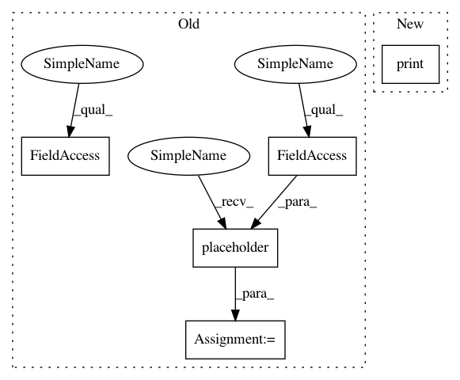

1aff940e60d7d62bd82ddf7469e666197832e212,src/classifiers/cnn_unittest.py,TestCNNModel,test_mnist,#TestCNNModel#,55
Before Change
im_shape = X_train[0].shape
x = tf.placeholder(tf.float32, shape=(None,im_shape[0],im_shape[1],im_shape[2]))
y = tf.placeholder(tf.float32, shape=(None,NB_CLASSES))
model = cnn.cnn_model(im_shape,act="relu")
predictions = model(x)
After Change
scores = model.evaluate(X_test,Y_test)
print("\naccuracy: %.2f%%" % (scores[1] * 100))
if __name__ == "__main__":
unittest.main()
In pattern: SUPERPATTERN
Frequency: 3
Non-data size: 5
Instances
Project Name: IBM/adversarial-robustness-toolbox
Commit Name: 1aff940e60d7d62bd82ddf7469e666197832e212
Time: 2017-05-11
Author: valentina.zantedeschi@ibm.com
File Name: src/classifiers/cnn_unittest.py
Class Name: TestCNNModel
Method Name: test_mnist
Project Name: IBM/adversarial-robustness-toolbox
Commit Name: 1aff940e60d7d62bd82ddf7469e666197832e212
Time: 2017-05-11
Author: valentina.zantedeschi@ibm.com
File Name: src/classifiers/cnn_unittest.py
Class Name: TestCNNModel
Method Name: test_mnist
Project Name: IBM/adversarial-robustness-toolbox
Commit Name: 1aff940e60d7d62bd82ddf7469e666197832e212
Time: 2017-05-11
Author: valentina.zantedeschi@ibm.com
File Name: src/classifiers/cnn_unittest.py
Class Name: TestCNNModel
Method Name: test_cifar
Project Name: zsdonghao/text-to-image
Commit Name: 74796ff02e9425ca336f595978fe6e7c422c0378
Time: 2017-04-11
Author: dhsig552@163.com
File Name: tensorlayer/layers.py
Class Name: DropoutLayer
Method Name: __init__